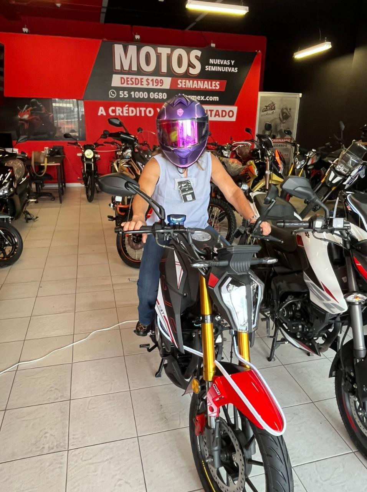

RiderMex Inversiones
Invierte en tiendas de motos con operación real
RiderMex vende motocicletas nuevas y seminuevas a clientes que las usan para trabajar y moverse. Como inversionista participas en el crecimiento de tiendas físicas, con rendimientos estimados, contratos y documentación que puedes revisar antes de decidir.
- De un vistazo
- Desde $70,000 de ticket, en tres formas de participar
- Rendimientos estimados, no garantizados, según el modelo
- Operación real: agencias, inventario y documentación revisable
Ticket desde
Rendimiento estimado modelos A/B
Tienda operando
Rendimiento estimado modelo C
Qué es RiderMex Inversiones
Un modelo claro, no una presentación complicada
La idea es sencilla: RiderMex ya vende motos. El capital impulsa inventario y crecimiento, las ventas generan utilidad y tú participas en rendimientos estimados según el modelo que elijas. Nada de esto depende de que entiendas finanzas: depende de que la operación siga vendiendo.
¿Qué estás financiando?
No compras una moto individual ni tienes que operar una tienda. Participas financieramente en un modelo de agencias de motos, con inventario, proceso comercial, alianzas de financiamiento y reportes.
¿Qué recibes?
Recibes una participación ligada al modelo seleccionado. El rendimiento no es garantizado, pero se estima con base en la operación, utilidad por moto, rotación de inventario y estructura de pagos.
Cómo funciona
El camino del dinero
Esto es lo que debe quedar claro antes de tomar una llamada: cómo entra tu inversión, qué hace RiderMex y cómo se genera el rendimiento estimado.
Recorrido del capital · de tu aportación al flujo estimado
Eliges modelo
$70,000 de contado, $10,000 + mensualidades, o $120,000 en tienda operando.
Se revisa legal
Contrato, Legal Kit, documentos, tiempos, riesgos y condiciones.
RiderMex opera
Tiendas, inventario, vendedores, financieras, publicidad y reportes.
Se venden motos
Clientes compran motos para trabajar, moverse o generar ingresos.
Recibes flujos
Participas en rendimientos estimados según calendario y contrato.
¿Quieres revisar si este modelo te conviene?
Escríbenos por WhatsApp y lo revisamos contigo: tu presupuesto, qué modelo encaja, cuándo empezarías a ver flujos y qué documentos puedes pedirnos antes de decidir.

Operación real
El modelo se apoya en tiendas que ya venden
Detrás de cada esquema de participación hay agencias físicas, inventario en piso y un proceso comercial activo. Puedes visitar una sucursal y validar la operación en persona antes de decidir.
Por qué existe demanda
La moto como herramienta de trabajo
El cliente de RiderMex no necesariamente compra una moto por lujo. Muchas veces la compra para trabajar, repartir, moverse más barato o generar ingresos. Eso hace que la demanda tenga una razón económica clara.
Movilidad diaria
La moto resuelve transporte en ciudades con tráfico y costos altos.
Herramienta de ingreso
Muchos compradores la usan para reparto, delivery, mensajería o autoempleo.
Financiamiento accesible
Las alianzas financieras permiten que el cliente pueda comprar sin pagar todo de contado.
De dónde sale el rendimiento
La economía de una tienda
La base del modelo es la utilidad por moto y la rotación de ventas. Estos números ayudan a visualizar la lógica, pero el rendimiento final siempre debe revisarse contra contrato y escenario elegido.
Cómo se construye la bolsa anual de rendimiento
Meta de una tienda estabilizada dentro del modelo comercial.
480 motos al año como referencia de rotación.
Utilidad usada como referencia para construir la bolsa.
Resultado aproximado del que se construye el rendimiento estimado.
Cifras de referencia para entender la lógica del modelo. El rendimiento final siempre debe revisarse contra el contrato y el escenario elegido.
Modelos de inversión
Elige cómo entrar
Hay tres formas de participar. Las primeras dos son el mismo ticket de $70,000, pero cambian forma de pago e inicio de flujos estimado.
Sobre el modelo de $120,000
El modelo de $120,000 corresponde a participaciones de operación activa que inversionistas actuales están poniendo a la venta. Por eso combina una entrada más alta con acceso a una operación ya madura.
¿No sabes cuál de los tres modelos te conviene? Consúltalo con un asesor →
Sistema de escalones + mercado secundario
Cómo funciona la plusvalía
Entrar antes puede importar no sólo por el tiempo que tu capital participa en la operación, sino por el escalón de precio en el que adquieres tu ticket.
El precio de las nuevas participaciones avanza por escalones. No necesitas memorizar una tabla: lo relevante es que tu precio de entrada queda fijado en un escalón y los tickets nuevos pueden venderse a precios superiores conforme avanza la colocación.
Cada escalón aplica al precio de las participaciones nuevas, no a un pago automático hacia el inversionista.
Importante: la plusvalía se materializa cuando existe una venta efectiva. El incremento de escalones no debe entenderse como una ganancia en efectivo automática ni como una recompensa garantizada.
¿Cuándo puedes vender?
El camino de una participación desde que la liquidas hasta que puede cambiar de manos.
-
Adquieres y liquidas tu ticket
El plazo se cuenta a partir de que la participación queda totalmente pagada.
-
Cumples 18 meses desde la liquidación total
A partir de ese punto puedes poner tu ticket a la venta conforme al proceso vigente.
-
RiderMex o comunidad de inversionistas
La participación puede ofrecerse a RiderMex o dentro de la comunidad de inversionistas, sujeto al proceso y condiciones aplicables.
-
Si se vende, capturas la diferencia
Tu plusvalía real depende de tu precio de entrada y del precio efectivo al que se cierre la venta.
¿Quieres revisar cómo aplicaría la plusvalía en tu caso? Habla con un asesor RiderMex →
Herramienta
Calcula tu escenario de inversión
Explora distintos escenarios con nuestro simulador: compara los tres modelos, sus rendimientos estimados y cómo se comporta la plusvalía según tu momento de entrada.
Es una herramienta ilustrativa. Los resultados son estimados y deben revisarse contra el contrato y el escenario real.
Una duda importante
¿Qué pasa si venden a crédito?
RiderMex trabaja con financieras. El cliente puede comprar a crédito, pero la financiera procesa el financiamiento y normalmente liquida la operación a RiderMex en corto plazo. Eso reduce la exposición directa a cobranza del cliente final.
Venta a crédito · quién asume qué
Compra su moto
El cliente adquiere la moto con una opción de financiamiento.
Origina el crédito
Los aliados financieros evalúan, aprueban y manejan el crédito y su cobranza.
Recibe liquidez
La operación se busca liquidar a RiderMex en 24 a 48 horas, según proceso y aprobación.
Menor exposición a cobranza
Al liquidar la financiera, se reduce la exposición directa a la cobranza del cliente final.
Por qué somos confiables
Respaldo, documentos y operación real
La confianza no debe depender de promesas. La decisión debe apoyarse en operación física, documentos revisables, estructura legal y transparencia.
Tiendas físicas
El modelo se apoya en agencias, inventario, vendedores y operación real.
Fideicomisos
La estructura busca separar activos, operación y reparto para dar mayor orden al inversionista.
Data Room
Facturas, contratos, números de serie y documentación pueden revisarse antes de avanzar.
Legal Kit
Puedes revisarlo con abogados, contador o asesor financiero antes de invertir.
Visita a tienda
Se puede validar la operación en persona con un asesor.
Reportes
La idea es que el inversionista tenga visibilidad y seguimiento del modelo.
Puedes verlo en persona
La forma más directa de validar el modelo es visitar una agencia: ver el inventario en piso, hablar con el equipo comercial y revisar la documentación con un asesor. Las 5 agencias RiderMex están en la Ciudad de México y el Estado de México.

¿Te gustaría revisar los documentos antes de decidir? Resuelve tus dudas por WhatsApp →
Presencia pública
RiderMex ya ha sido mencionado en medios
Además de la información del modelo, puedes revisar una recopilación de apariciones y menciones públicas de RiderMex. Esto ayuda a validar que la marca ya tiene presencia y conversación alrededor.
El siguiente paso
Platícalo con un asesor
Ya viste cómo funciona. Lo que sigue no es decidir a ciegas: es sentarte con alguien y revisar tu caso. Qué ticket te hace sentido, en cuánto tiempo verías flujos, qué documentos vas a querer leer y qué dudas te faltan por resolver. Sin compromiso de invertir.
Información importante
Antes de tomar una decisión
Esto es una inversión, no una promesa. Por eso la página debe explicarte el modelo y llevarte a revisar documentos antes de avanzar.
No son garantizados. Dependen de operación, ventas, tiempos, disponibilidad y condiciones contractuales.
Antes de aportar capital, revisa contrato, fideicomisos, salida, penalizaciones, responsabilidades y documentos.
El Zoom sirve para resolver dudas y revisar si el modelo hace sentido para tu perfil.
Preguntas frecuentes
Lo que debes tener claro
Estas son las dudas normales antes de agendar Zoom o revisar documentos.